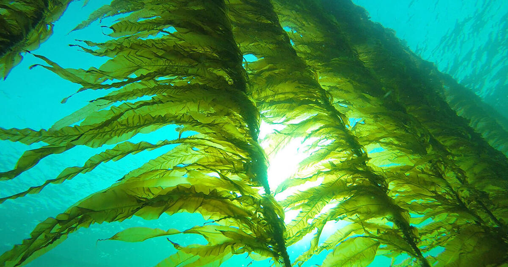
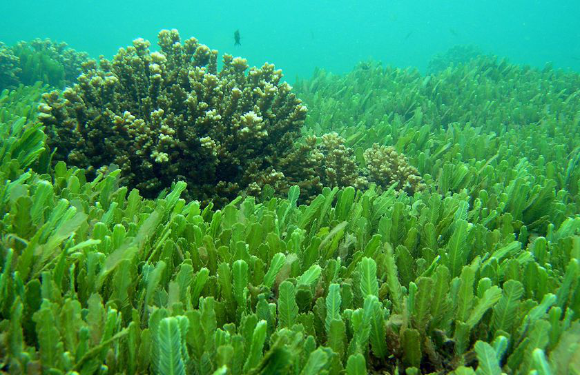

Водорості — це найдавніші рослини на Землі. Вони живуть переважно у воді (у морях, океанах, річках та озерах) і можуть бути як мікроскопічними, так і дуже великими.
На відміну від наземних рослин, водорості не мають справжніх стебел, листків чи коренів. Їхнє тіло називається словиною (або таломом). Вони вбирають поживні речовини всією поверхнею тіла.

Водорості виробляють величезну кількість кисню для нашої планети та є основою харчування для багатьох мешканців водойм.
Водорості виробляють понад 50% усього кисню на Землі — навіть більше, ніж усі ліси планети разом узяті!